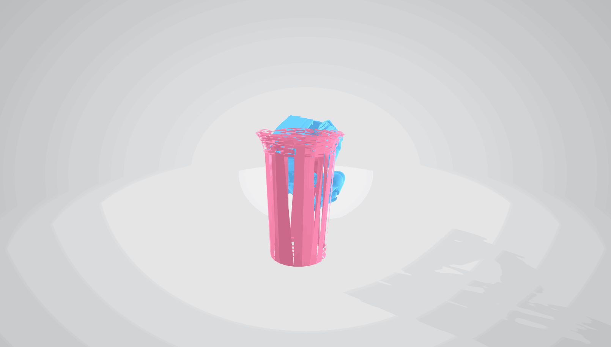
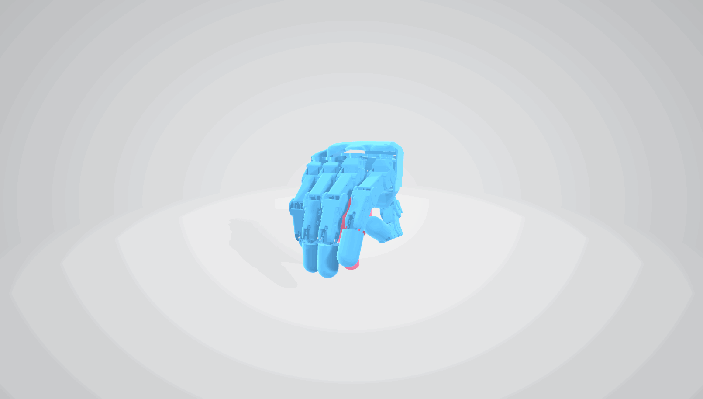
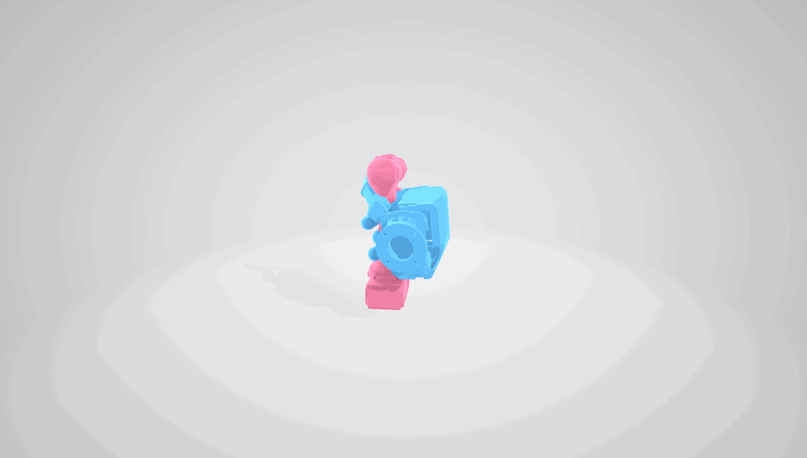
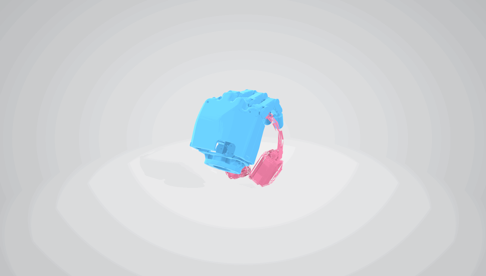
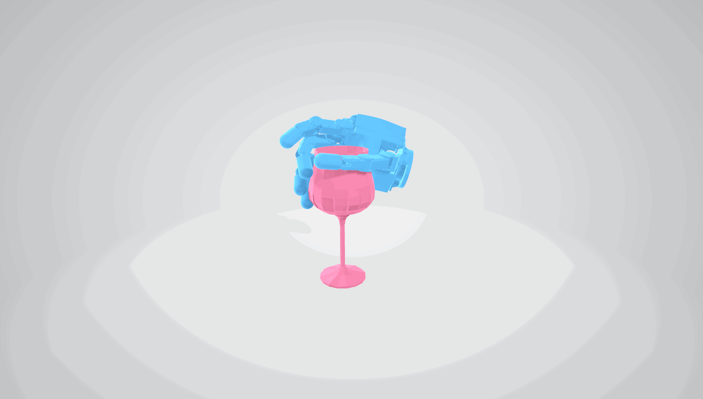
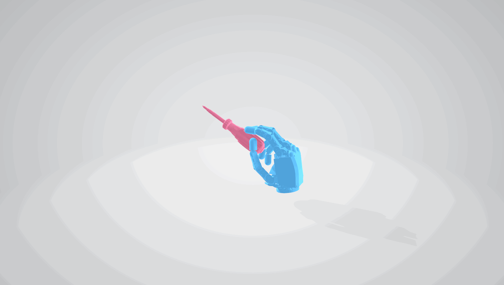
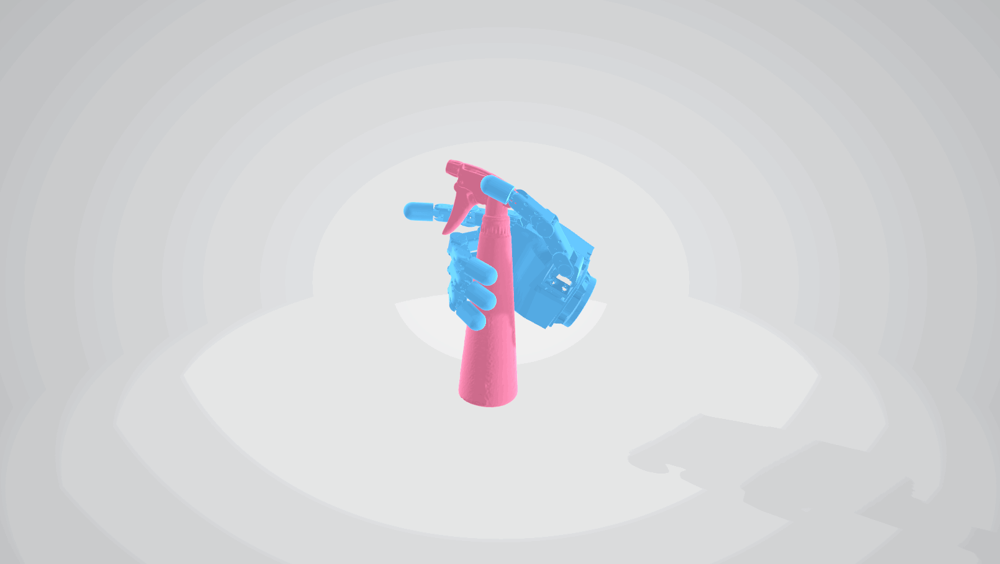
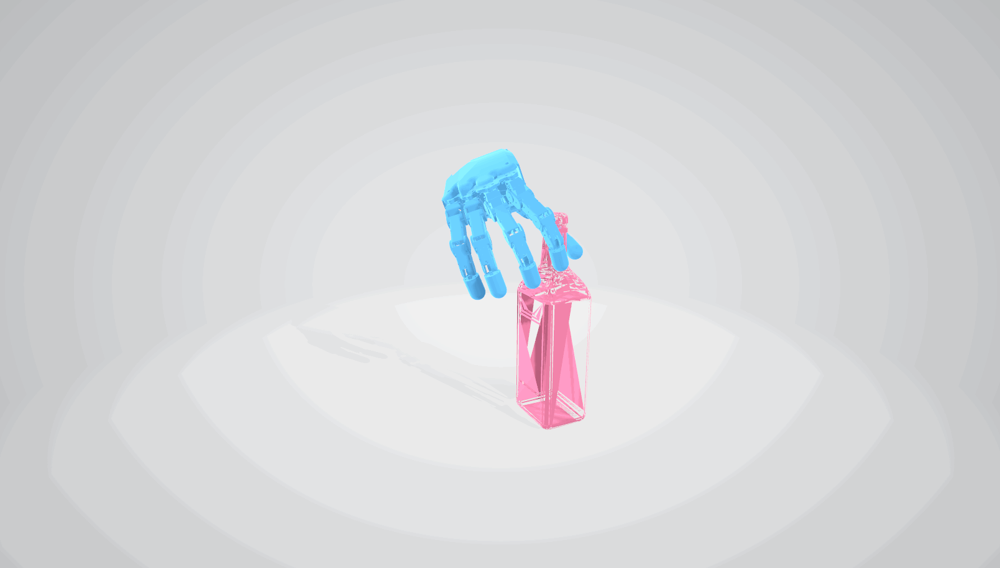
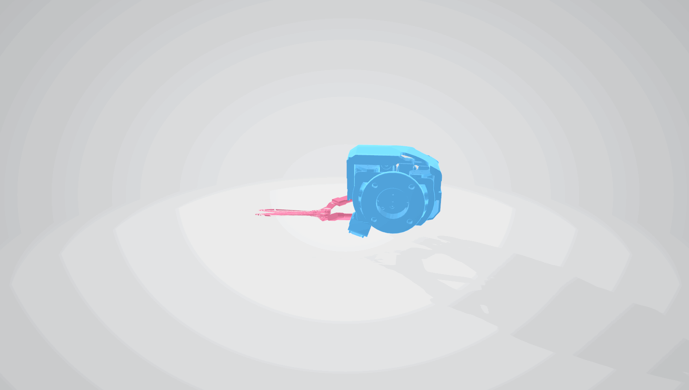
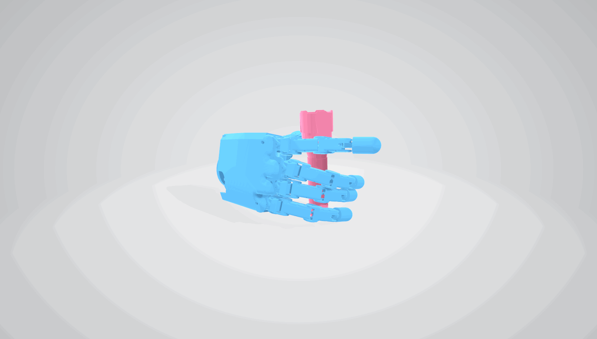
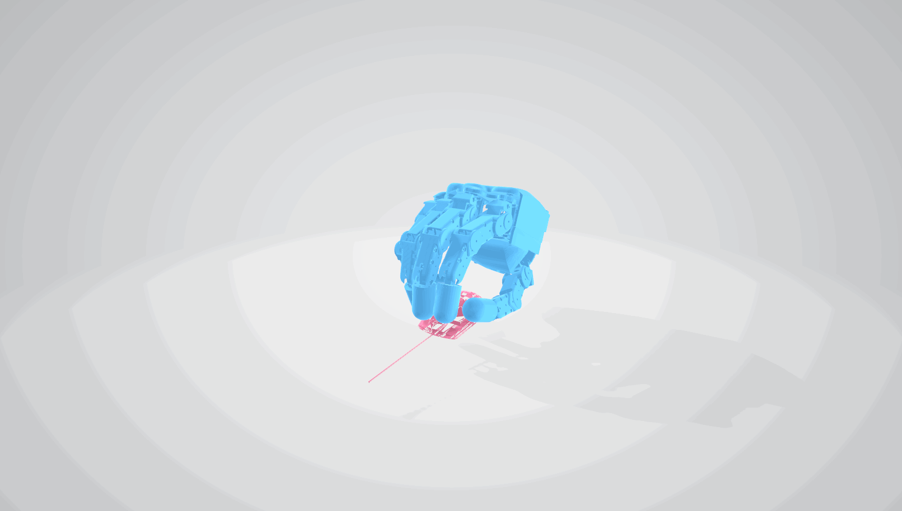
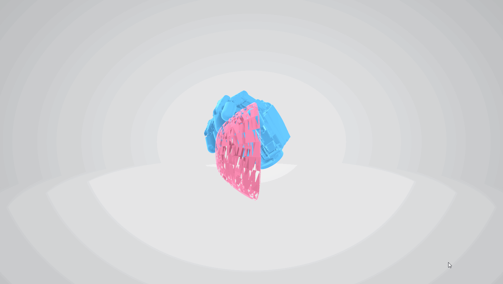
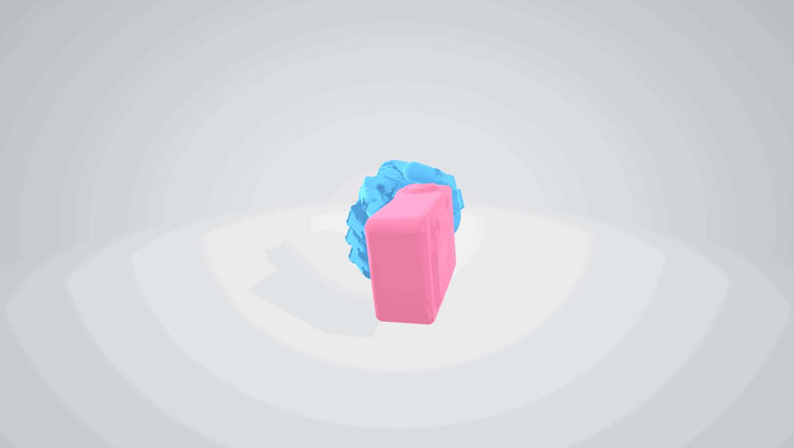
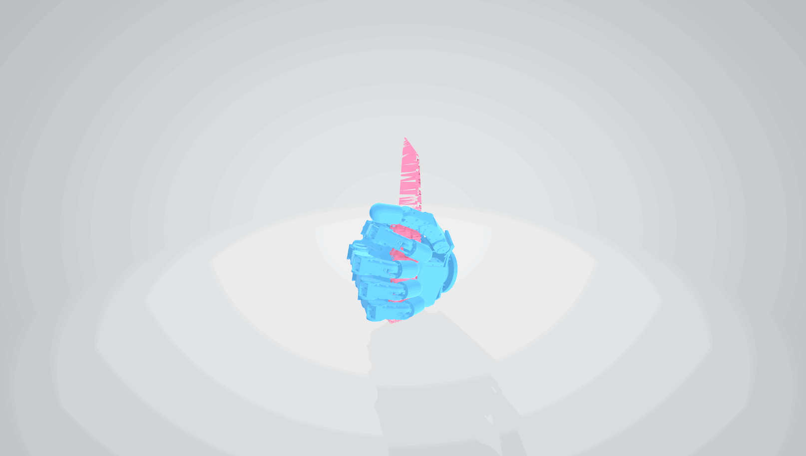
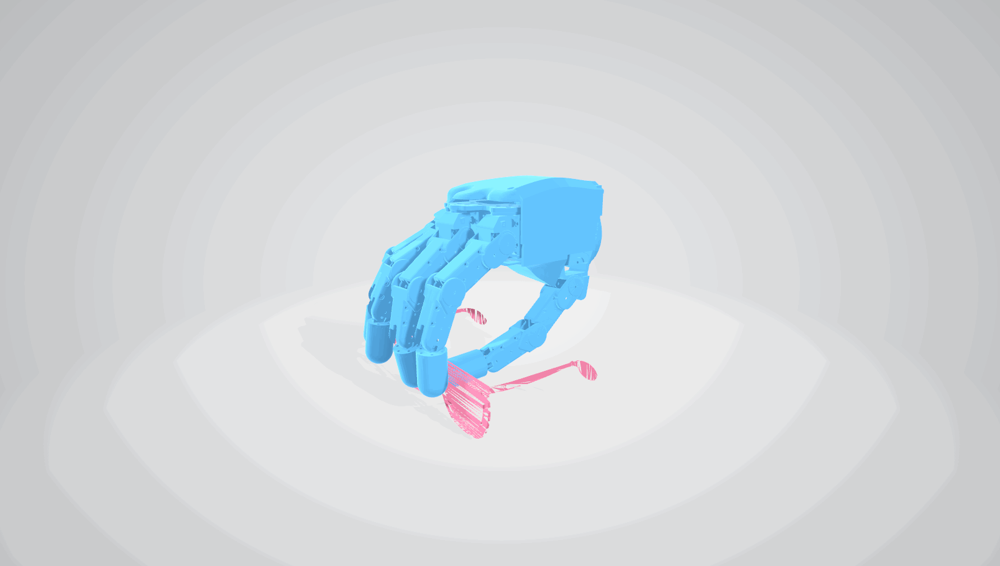
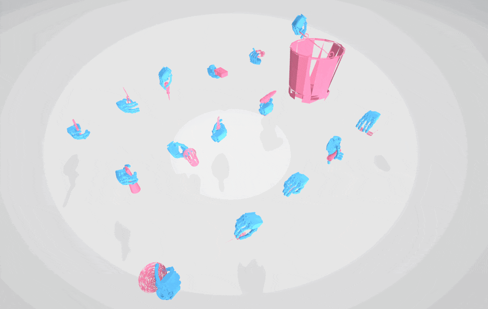
Dexterous grasp datasets are vital for embodied intelligence, but mostly emphasize grasp stability, ignoring functional grasps needed for tasks like opening bottle caps or holding cup handles. Most rely on bulky, costly, and hard-to-control high-DOF Shadow Hands. Inspired by the human hand’s underactuated mechanism, we establish UniFucGrasp, a universal functional grasp annotation strategy and dataset for multiple dexterous hand types. Based on biomimicry, it maps natural human motions to diverse hand structures and uses geometry-based force closure to ensure functional, stable, human-like grasps. This method supports low-cost, efficient collection of diverse, high-quality functional grasps. Finally, we establish the first multi-hand functional grasp dataset and provide a synthesis model to validate its effectiveness. Experiments on the UFG dataset, IsaacSim, and complex robotic tasks show that our method improves functional manipulation accuracy and grasp stability, enables efficient generalization across diverse robotic hands, and overcomes annotation cost and generalization challenges in dexterous grasping.
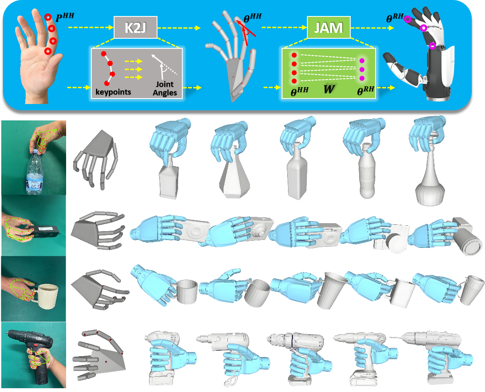
Figure 1: Example of functional grasp annotation using UniFucGrasp across diverse dexterous hands.
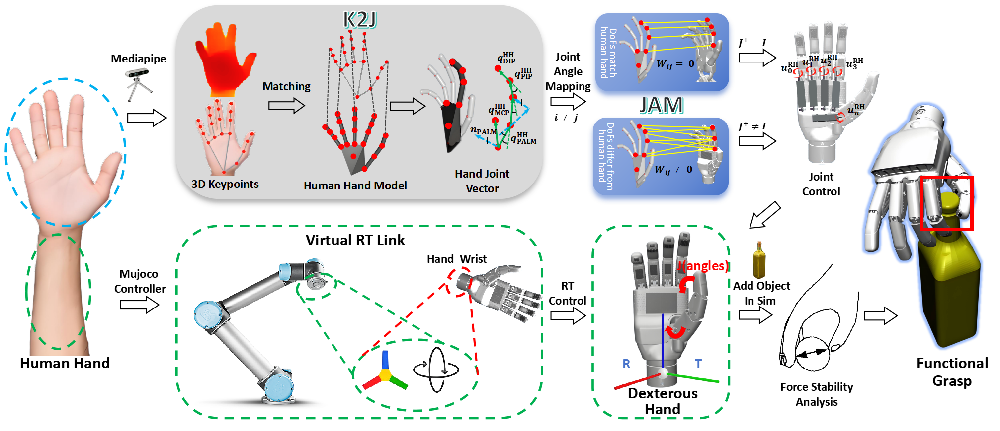
Figure 2: Illustration of our annotation strategy for mapping human hand motions to dexterous hands. The left shows real-hand motion capture; the top illustrates gesture mapping and conversion, and the bottom shows hand pose collection. The right presents the final functional grasp gestures generated for the dexterous hand.
InspireHand
HnuHand
ShadowHand
Drill
Bottle
Spraybottle
Mug
Flashlight
Drill
Bottle
Spraybottle
Mug
Flashlight
@article{lin2025unifucgrasp,
title={UniFucGrasp: Human-Hand-Inspired Unified Functional Grasp Annotation Strategy and Dataset for Diverse Dexterous Hands},
author={Lin, Haoran and Chen, Wenrui and Chen, Xianchi and Yang, Fan and Diao, Qiang and Xie, Wenxin and Wu, Sijie and Yang, Kailun and Li, Maojun and Wang, Yaonan},
journal={arXiv preprint arXiv:2508.03339},
year={2025}
}